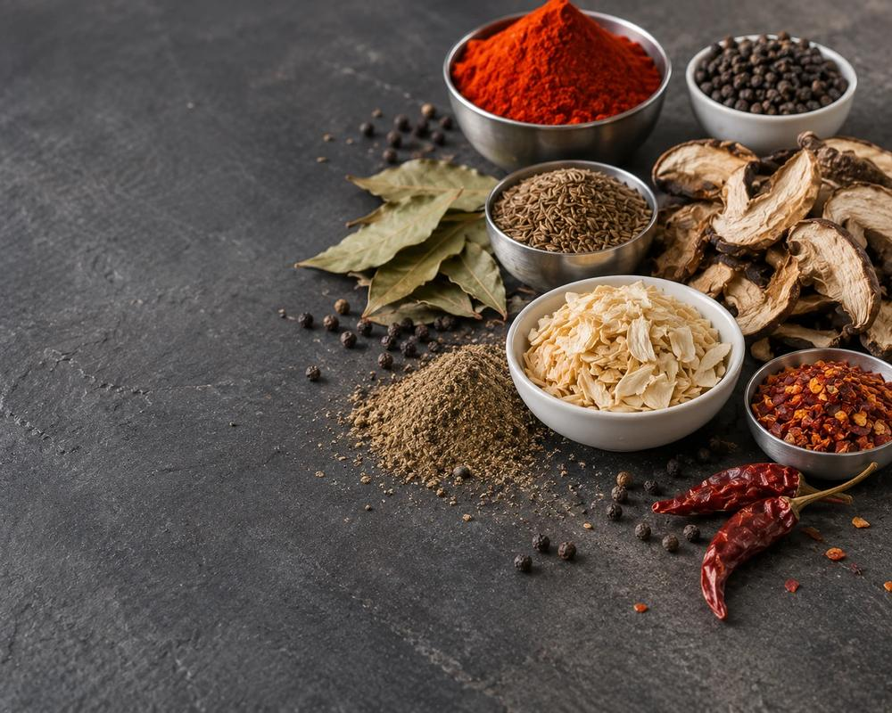

Products for food manufacturing
From single spices and dried ingredients to complex seasoning and technological blends. Explore our range or let us help you find the right solution.
Explore our range
-

Spices and seasoning blends
Whole, crushed and ground single spices and seasoning blends made to our own recipes.
-

Dried ingredients
Dried vegetables as flakes, cubes, granules or powder, dried mushrooms, nuts and dried fruit.
-

Blends for meat production
Seasoning and technological preparations for the meat industry – combi blends, glazing injections and additives.
Including: Combi blends, Blends of natural spices, Technological additives, Technological meat substitutes
-

Food service and more
Stocks, soups and sauces, pasta, potato products, starches and other ingredients.
Product catalogue
Product names are given in Czech – send us an enquiry and we will reply in English.
490 products
- Anýz
- Anýz mletý
- Badyán celý
- Badyán mletý
- Bazalka
- Bazalka mletá
- Bobkový list
- Citronová kůra - drcená
- Citronová kůra - mletá
- Citrónová kůra
- Fenykl celý
- Fenykl drcený
- Fenykl mletý
- Hořčice bílá celá
- Hořčice bílá drcená
- Hořčice bílá mletá
- Hřebíček celý
- Hřebíček mletý
- Chilli mleté
- Chilli papričky
- Jalovec
- Jalovec - mletý
- Kardamon mletý
- Kari lístky
- Kmín celý
- Kmín drcený
- Kmín mletý
- Kmín římský
- Kmín římský drcený
- Kmín římský mletý
Showing 30 of 490
Can't find the product you are looking for?
We will be happy to help you find the right solution.
Not sure which product is right for you?
Our specialists will help you choose ingredients and seasoning blends, and develop a custom recipe.